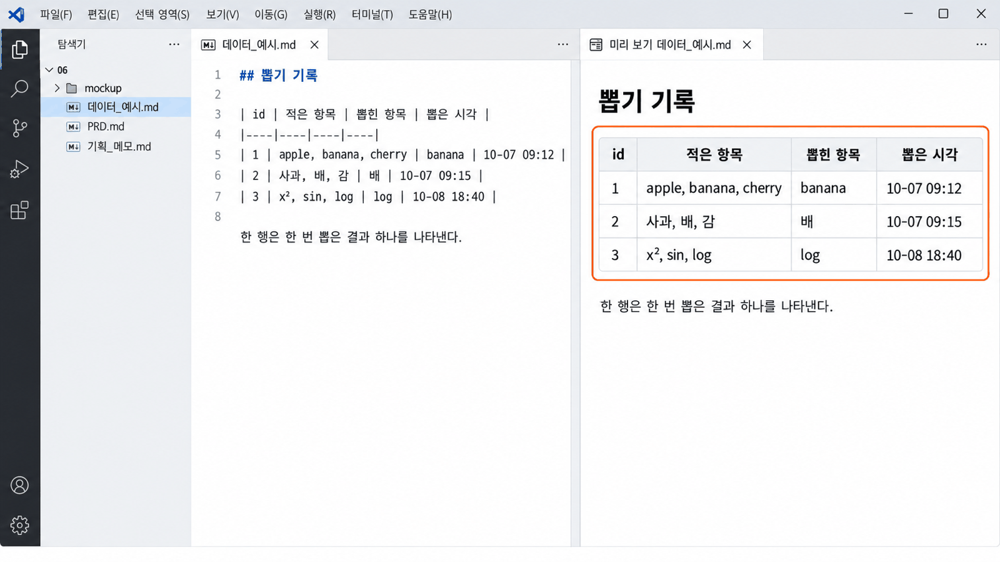

관계형 데이터베이스의
기초关系型
数据库基础
내 서비스가 기억할 것을 AI와 표로 그려 봅니다.用表看看服务记住什么、怎么记住，
再和 AI 一起把自己的服务要记住的东西画成表。
오늘 할 일今天要做的事
지난 시간에 만든 목업은 화면 모양은 있지만 아무것도 기억하지 못합니다. 오늘은 서비스가 정보를 어떻게 기억하는지 표로 살펴보고, 내 서비스가 기억할 것을 AI와 함께 표로 그려 봅니다. 이 표는 다음 시간에 PRD의 5항을 쓰는 재료가 됩니다.上节课做的模型有画面的样子，却什么也记不住。今天先用表看看服务是怎样记住信息的，再和 AI 一起把自己的服务要记住的东西画成表。这张表下节课就是写 PRD 第 5 项的材料。
데이터_예시.md06 폴더에 데이터_예시.md를 AI와 만들고, 그 표를 끝까지 읽고 검토하는 것입니다. 앞의 개념 설명은 그 표를 읽기 위한 준비입니다.和 AI 一起在 06 文件夹里做出 데이터_예시.md，并把那张表从头读到尾、认真检查。前面的概念讲解，是为了读懂那张表做准备。
내 목업에 적고 새로 고침하면 사라진다在自己的模型里写好再刷新，内容就消失
6-2에서 만든 목업을 다시 열어 봅니다. 입력칸에 무언가 적고 버튼을 누른 뒤 새로 고침(F5)을 누릅니다. 화면이 처음 상태로 돌아가면, 그 서비스는 아직 아무것도 기억하지 못한다는 뜻입니다.重新打开 6-2 做的模型。在输入框里写点什么，按下按钮，再按刷新（F5）。画面回到最初的样子，就说明这个服务还什么都记不住。
- 탐색기에서
06폴더를 마우스 오른쪽 단추로 누르고 Code(으)로 열기를 고른다. 이미 열려 있으면 그대로 쓴다.在资源管理器中右键单击06文件夹，选择 Code(으)로 열기（通过 Code 打开）。已经打开的话就直接用。 mockup폴더의index.html을 오른쪽 클릭하고 Open with Live Server를 고른다.右键单击mockup文件夹里的index.html，选择 Open with Live Server。- 입력칸에 아무거나 적고 버튼을 누른다. 결과가 보이면 브라우저에서
F5를 누른다.在输入框里随便写点什么，按下按钮。出现结果后，在浏览器里按F5。
목업이 없다면 이 칸에서 해 본다没有模型的话，就在这一栏试试
목업이 없거나 입력칸이 없다면 아래 연습 칸에서 똑같이 해 봅니다. 할 일을 두 개쯤 적어 목록에 올린 뒤 이 교과서 화면에서 F5를 누르면, 같은 쪽으로 돌아와도 목록은 비어 있습니다. 적은 내용을 브라우저가 잠깐 들고 있었을 뿐, 어디에도 저장하지 않았기 때문입니다.如果没有模型，或者模型里没有输入框，就在下面的练习栏里照样做一遍。写两三条待办加进列表，再在这个教材画面按 F5，回到同一页时，列表已经空了。因为写下的内容只是浏览器暂时拿着，并没有保存到任何地方。
서비스가 기억하려면 적은 것을 어딘가에 저장해 두었다가, 다시 열 때 꺼내 보여 주어야 합니다. 2-2에서 만든 변수도 프로그램이 끝나면 값이 남지 않습니다. 오늘 배우는 데이터베이스가 그 저장하는 곳입니다.服务要记住东西，就得先把写下的内容保存在某个地方，下次打开时再取出来显示。2-2 做的变量，程序一结束，值也留不下来。今天学的数据库，就是那个保存的地方。
데이터베이스는 서비스의 기억 장소다数据库是服务记东西的地方 핵심核心
데이터베이스(DB)는 서비스가 나중에 다시 꺼내 볼 수 있도록 정보를 모아 두는 곳입니다. 쇼핑 앱의 장바구니가 다음 날에도 그대로 있는 것은 담은 물건을 데이터베이스에 저장해 두었기 때문입니다. 저장뿐 아니라 찾고, 고치고, 서로 연결하는 일까지 맡습니다.数据库（DB）是把信息存起来、让服务以后还能再取出来看的地方。购物 App 的购物车第二天还在，是因为放进去的商品存在了数据库里。它不只负责保存，还负责查找、修改和相互连接。
| 어디에 두나放在哪里 | 언제까지 남나能留多久 | 예例子 |
|---|---|---|
| 변수变量 | 프로그램이 실행되는 동안만只在程序运行期间 | 2-2에서 만든 변수2-2 做的变量 |
| 파일文件 | 지우기 전까지. 여럿이 함께 고치거나 다른 자료와 잇기는 번거롭다删掉之前一直在，但多人一起改、和别的资料连起来都很麻烦 | 5회의 CSV 파일第 5 次课的 CSV 文件 |
| 데이터베이스数据库 | 지우기 전까지. 찾고 고치고 연결하기 쉽다删掉之前一直在，查找、修改、连接都方便 | 쇼핑 앱의 장바구니购物 App 的购物车 |
이 수업에서 배우는 것은 정보를 표 여러 개로 나누어 저장하고 서로 이어 놓는 관계형 데이터베이스(RDBMS)입니다. 「관계」는 사람 사이가 아니라 표와 표 사이의 연결을 말합니다. 11회에 서비스를 만들 때 SQLite라는 관계형 데이터베이스에 연결합니다.这门课学的是把信息分成几张表保存、再把它们连起来的关系型数据库（RDBMS）。“关系”说的不是人和人之间，而是表和表之间的连接。第 11 次课做服务时，会连接一个叫 SQLite 的关系型数据库。
문서나 「키 : 값」처럼 표가 아닌 모양으로 저장하는 방식들을 묶어 NoSQL이라고 부릅니다. 더 새롭거나 더 좋은 방식이 아니라 쓰임에 따라 고르는 다른 방식이고, 이 수업에서는 다루지 않습니다.像文档、“键 : 值”这样不用表来保存的各种方式，合起来叫 NoSQL。它不是更新、更好的方式，而是按用途选择的另一类方式，这门课不讲。
표의 한 행은 기록 하나다表的一行就是一条记录 핵심核心
관계형 데이터베이스는 정보를 표에 담습니다. 4-2에서 pandas로 본 표와 같아서, 가로 한 줄인 행(row)이 기록 하나이고 세로 한 칸인 열(column)이 그 기록의 항목입니다. 오늘은 독서 기록 서비스 하나를 예로 끝까지 봅니다.关系型数据库把信息装进表里。和 4-2 用 pandas 看过的表一样，横着的一行（row）是一条记录，竖着的一列（column）是这条记录的一个项目。今天从头到尾都用一个读书记录服务来举例。
reads| id | title | rating | comment |
|---|---|---|---|
| 1 | 어린 왕자小王子 | 5 | 다시 읽고 싶다.还想再读一遍。 |
| 2 | 모모毛毛 | 4 | 시간에 대해 생각했다.思考了时间。 |
| 3 | 어린 왕자小王子 | 4 | 두 번째로 읽었다.读了第二遍。 |
주황 줄 = 행 하나 = 독서 기록 하나 파란 칸 = 열 하나 = 평점(rating) 橙色那一行 = 一行 = 一条读书记录 蓝色那一列 = 一列 = 评分（rating）
「이 표의 한 행은 무엇인가?」에 한 문장으로 답할 수 있어야 합니다. 이 표라면 「한 행은 독서 기록 하나를 나타낸다」입니다. 책과 회원과 기록이 한 표에 섞이면 이 문장을 쓸 수 없습니다.要能用一句话回答“这张表的一行是什么？”。这张表的答案是“一行代表一条读书记录”。如果书、会员和记录混在一张表里，这句话就写不出来。
기본키 id가 행 하나를 집어낸다主键 id 能准确指出一行 핵심核心
같은 반에 김민준이 두 명이면 이름만으로는 누구인지 알 수 없어서 학교는 학번을 씁니다. 표도 행마다 겹치지 않는 번호를 붙여 그 행을 집어냅니다. 이 열을 기본키(PK, Primary Key)라고 하고, 이 수업에서는 저절로 붙는 id를 기본키로 씁니다.同一个班里有两个金民俊，光靠名字分不清是谁，所以学校用学号。表也一样，给每一行编一个不重复的号码，用它准确指出那一行。这一列叫主键（PK，Primary Key）。这门课用自动编上的 id 当主键。
reads| id PK | title | rating | comment |
|---|---|---|---|
| 1 | 어린 왕자小王子 | 5 | 다시 읽고 싶다.还想再读一遍。 |
| 2 | 모모毛毛 | 4 | 시간에 대해 생각했다.思考了时间。 |
| 3 | 어린 왕자小王子 | 4 | 두 번째로 읽었다.读了第二遍。 |
1번과 3번은 제목이 같지만 id가 달라서 서로 다른 기록으로 구별된다.第 1 行和第 3 行书名相同，但 id 不同，所以能分清是两条不同的记录。
한 표 안에서 겹치지 않고, 비어 있지 않고, 바뀌지 않아야 합니다. 제목이나 이름은 같을 수도 있고 나중에 바뀔 수도 있어서 기본키로 쓰지 않습니다.在一张表里要不重复、不为空、不改变。书名或名字可能相同，以后也可能改，所以不拿来当主键。
전화번호 같은 실제 개인정보도 기본키로 쓰지 않습니다. 기본키는 다른 표에도 적히므로 표 곳곳에 퍼져 지우기 어렵고 새어 나갈 위험이 커집니다. 서비스에 꼭 필요한 정보만 저장하는 것을 데이터 최소 수집이라고 합니다. 저장하지 않은 정보는 새어 나갈 수도 없습니다.电话号码这类真实个人信息也不能当主键。主键还会写进别的表，会散到各处，难删除，泄露的风险也更大。只保存服务确实需要的信息，叫数据最小化收集。没有保存的信息，也就无从泄露。
반복되는 것은 표를 나누고 id로 잇는다重复的东西就拆成另一张表，用 id 连起来 핵심核心
독서 기록마다 책 제목과 저자를 적으면, 같은 책 정보가 기록 수만큼 되풀이됩니다. 제목에 오타가 있으면 그 줄을 전부 고쳐야 합니다. 그래서 책 정보는 책 표로 따로 빼고, 기록에는 어느 책인지 가리키는 번호 book_id만 적습니다.如果每条读书记录都写上书名和作者，同一本书的信息就会按记录条数重复下去。书名有错字，就得把那些行全部改掉。所以把书的信息单独拿出来放进书表，记录里只写指向哪本书的号码 book_id。
books| id PK | title | author |
|---|---|---|
| 1 | 어린 왕자小王子 | 생텍쥐페리圣埃克苏佩里 |
| 2 | 모모毛毛 | 미하엘 엔데米切尔·恩德 |
reads| id PK | book_id FK | rating |
|---|---|---|
| 1 | 1 | 5 |
| 2 | 2 | 4 |
| 3 | 1 | 4 |
책.id ← 독서 기록.book_id书.id ← 读书记录.book_id
다른 표의 기본키를 가리키는 열을 외래키(FK, Foreign Key)라고 합니다. 외래키에는 제목이 아니라 id를 적어 두므로, 책 제목을 고쳐도 기록과의 연결은 그대로 남습니다.指向另一张表主键的列叫外键（FK，Foreign Key）。外键里写的是 id 而不是书名，所以就算改了书名，和记录的连接也照样保留。
하나에 여러 개가 붙는 관계, 1:N一个连着多个的关系：1:N 핵심核心
책 표와 독서 기록 표를 이어 보면 「어린 왕자」(책 id 1)에는 독서 기록이 두 개 붙어 있습니다. 같은 책을 두 번 읽고 두 번 기록했기 때문입니다. 이렇게 한쪽 하나에 다른 쪽 여러 개가 붙는 관계를 1:N이라고 하고, 외래키는 여러 개가 있는 쪽인 독서 기록 표에 둡니다.把书表和读书记录表连起来看，《小王子》（书 id 1）连着两条读书记录，因为同一本书读了两遍、记了两次。像这样一边的一个连着另一边的多个，叫 1:N 关系。外键放在“多”的那一边，也就是读书记录表里。
책 표에 「이 책의 기록들」 칸을 만들면 한 칸에 번호를 여러 개 넣어야 합니다. 표의 한 칸에는 값 하나가 원칙이라 외래키는 N 쪽에 둡니다. 다대다(N:M)는 이 수업에서 다루지 않습니다.如果在书表里开一栏“这本书的记录”，一个格子就得塞好几个号码。表的一个格子原则上只放一个值，所以外键放在 N 那一边。多对多（N:M）这门课不讲。
나눠 저장하고, 보여 줄 때 합친다分开保存，显示时再合起来 핵심核心
독서 기록 표만 보면 book_id가 1이라는 것만 있어 무슨 책인지 알 수 없습니다. 화면에 보여 줄 때는 book_id와 책 표의 id를 맞대어 두 표를 합칩니다. 이렇게 연결된 표의 정보를 함께 가져오는 것을 JOIN이라고 합니다.只看读书记录表，只知道 book_id 是 1，看不出是哪本书。显示到画面上时，把 book_id 和书表的 id 对上，把两张表合起来。像这样把连在一起的表的信息一并取出来，叫 JOIN。
| book_id FK | rating |
|---|---|
| 1 | 5 |
| 2 | 4 |
| 1 | 4 |
| title | rating |
|---|---|
| 어린 왕자小王子 | 5 |
| 모모毛毛 | 4 |
| 어린 왕자小王子 | 4 |
JOIN을 쓰는 문법은 배우지 않습니다. 「어느 두 표를, 어느 키로 이어, 화면에 무엇을 보여 주는가」만 읽을 수 있으면 됩니다. 나누어 저장하고 보여 줄 때 합치는 것, 이것이 관계형 데이터베이스의 기본 생각입니다.不学写 JOIN 的语法。只要能读懂“把哪两张表、用哪个键连起来、在画面上显示什么”就够了。分开保存、显示时再合起来，这就是关系型数据库的基本想法。
표는 하나로 충분한 경우가 많다很多时候一张表就够了
모든 서비스에 표를 여러 개 만들고 외래키를 넣을 필요는 없습니다. 저장할 대상이 한 종류뿐이면 표 하나가 맞는 설계입니다. 표는 서로 다른 대상이 섞이거나 같은 정보가 되풀이될 때만 나눕니다.不是每个服务都要建好几张表、加外键。要保存的对象只有一种时，一张表就是对的设计。只有不同的对象混在一起，或者同样的信息一再重复时，才把表拆开。
| 서비스服务 | 표表 | 한 행은一行是 |
|---|---|---|
| 할 일 기록待办记录 | 1개 · 할 일1 张 · 待办 | 할 일 하나一件待办 |
| 하나 뽑기(6-2 예)抽一个（6-2 的例子） | 1개 · 뽑기 기록1 张 · 抽取记录 | 한 번 뽑은 결과抽一次的结果 |
| 독서 기록读书记录 | 2개 · 책, 독서 기록2 张 · 书、读书记录 | 책 한 권 / 기록 하나一本书 / 一条记录 |
이 수업의 서비스는 사용자가 만든 의미 있는 기록을 최소 한 종류 저장하고, 다시 열었을 때 확인할 수 있어야 합니다. 결과만 보여 주는 도구라도 사용한 값과 결과를 남기면 됩니다. 저장했다는 표시를 내려고 서비스와 상관없는 값을 만들지는 않습니다.这门课的服务，至少要保存一种用户做出来的、有意义的记录，再次打开时还能看到。只显示结果的工具，也可以把用过的值和结果留下来。不要为了显得“有保存”而编造和服务无关的值。
AI에게 내 서비스의 표를 그려 달라고 한다请 AI 画出自己服务的表
이제 내 서비스로 해 봅니다. 내 PRD를 AI에게 읽혀, 이 서비스가 기억해야 할 기록을 예시가 든 표로 그려 달라고 합니다. 열이나 키를 내가 설계하지 않습니다. AI가 그린 표를 오늘 배운 눈으로 읽고 검토하는 것이 내 일입니다.现在用自己的服务来做。让 AI 读自己的 PRD，请它把这个服务需要记住的记录画成带示例的表。列和键不用自己设计。用今天学到的眼光去读、去检查 AI 画的表，才是自己的事。
- VS Code 탐색기 맨 위가
06인지 본다. 터미널 → 새 터미널을 열고 줄 끝이…\06>인지 본 뒤opencode를 입력한다.确认 VS Code 资源管理器最上方是06。打开 터미널 → 새 터미널（终端 → 新建终端），确认提示符结尾是…\06>，再输入opencode。 - 아래 요청문을 복사해 보낸다. 파일 이름은 6-2처럼 상대 경로 복사로 붙여 넣어도 된다.复制下面的请求发出去。文件名也可以像 6-2 那样用 상대 경로 복사（复制相对路径）粘贴。
PRD.md를 읽고, 이 서비스가 기억해야 할 기록을 표로 그려 줘. 표마다 예시 행을 3줄 넣고, 한 행이 무엇을 나타내는지 한 문장으로 적어 줘. 06 폴더에 데이터_예시.md 파일로 저장해 줘.
请读 PRD.md，把这个服务需要记住的记录画成表。 每张表放 3 行示例，并用一句话写出一行代表什么。 保存成 06 文件夹里的 데이터_예시.md 文件。
AI가 대화창에만 표를 보여 주고 끝내면 「06 폴더에 데이터_예시.md 파일로 저장해 줘」를 한 번 더 보냅니다. 답이 멈추고 429가 보이면 1~2분 뒤 같은 요청을 다시 보냅니다.如果 AI 只在对话框里给出表就结束了，就再发一次「保存成 06 文件夹里的 데이터_예시.md 文件」。回答停住并出现 429 时，等 1~2 分钟再发一次同样的请求。
미리 보기로 표를 펼쳐 본다用预览把表展开来看
탐색기에 데이터_예시.md가 생기면 눌러 엽니다. md 파일 그대로는 |와 - 기호가 섞여 읽기 어렵습니다. 6-1에서 메모를 볼 때처럼 미리 보기를 열면 칸이 나뉜 표로 보입니다.资源管理器里出现 데이터_예시.md 后点开它。md 文件原样看，夹着 | 和 - 符号，不好读。像 6-1 看备忘时那样打开预览，就能看到分好格子的表。
- 탐색기에서
데이터_예시.md를 마우스 오른쪽 단추로 누르고 미리보기 열기를 고른다.Ctrl+Shift+V를 눌러도 된다.在资源管理器中右键单击데이터_예시.md，选择 미리보기 열기（打开预览）。也可以按Ctrl+Shift+V。 - 표의 열 이름과 예시 세 줄, 그 아래 「한 행은 ~」 문장까지 끝까지 읽는다.把表的列名、三行示例，连同下面那句“一行是……”一直读到最后。

네 가지를 읽고, 다르면 다시 말한다读这四件事，不对就再告诉 AI 핵심核心
AI가 그린 표는 출발점입니다. 아래 네 가지를 내 눈으로 확인하고, 다르면 AI에게 다시 말해 고치게 합니다. AI가 파일을 고쳐도 괜찮습니다. 고친 뒤에 다시 끝까지 읽는 것이 오늘의 연습입니다.AI 画的表只是起点。用自己的眼睛确认下面四件事，不对就再告诉 AI，让它改。AI 改文件没关系。改完之后再从头读到尾，就是今天的练习。
| 읽고 확인할 것要读并确认的 | 다르면 이렇게 말한다不对就这样说 |
|---|---|
| 한 행은 무엇인가 — 「한 행은 ~」 문장이 내 서비스의 기록 하나를 말하나一行是什么 — “一行是……”这句话说的是不是自己服务的一条记录 | 「한 행이 무엇인지 더 쉬운 말로 다시 적어 줘.」「请用更简单的话重新写一行代表什么。」 |
| id — 표마다 맨 앞에 번호 열이 있나id — 每张表最前面有没有号码列 | 「표마다 id 열을 기본키로 넣어 줘.」「请在每张表里加上 id 列当主键。」 |
| 실제 개인정보 — 예시에 진짜 이름·전화번호·주소가 들어갔나真实个人信息 — 示例里有没有真实的姓名、电话、地址 | 「예시에서 실제 개인정보를 빼 줘.」「请把示例里的真实个人信息删掉。」 |
| 표의 수 — 섞인 대상이 있거나 표가 세 개를 넘나表的数量 — 有没有混在一起的对象，表是不是超过三张 | 「표를 하나로 줄일 수 있는지 이유와 함께 알려 줘.」「请告诉我能不能减成一张表，并说明理由。」 |
표가 둘 이상이면 외래키 열이 여러 개가 붙는 쪽에 있는지도 봅니다. 데이터_예시.md는 제출물이 아니고, 7-2에서 PRD의 5항을 쓸 때 AI와 내가 함께 보는 재료입니다.如果有两张以上的表，还要看外键列是不是在“多”的那一边。데이터_예시.md 不是提交物，而是 7-2 写 PRD 第 5 项时，自己和 AI 一起看的材料。
이럴 때는 이렇게 한다遇到这些情况这样做 필요할 때需要时
목업을 다시 열고 AI에게 표를 맡기다 보면 막히는 자리가 비슷합니다. 내 상황과 같은 줄을 찾아 오른쪽대로 해 봅니다. 그래도 안 되면 손을 듭니다.重新打开模型、把表交给 AI 时，卡住的地方都差不多。找到和自己情况一样的那一行，照右边做。还不行就举手。
mockup 폴더가 없거나 목업에 입력칸이 없다没有 mockup 文件夹，或者模型里没有输入框 | 오늘은 「목업이 없다면 이 칸에서 해 본다」 쪽의 연습 칸으로 합니다. 목업은 7-2에서 다시 이어 갑니다.今天就用“没有模型的话，就在这一栏试试”那一页的练习栏。模型在 7-2 接着做。 |
F5를 눌렀는데 적은 글자가 남아 있다按了 F5，写的字还在 | 브라우저가 입력칸 글자만 잠깐 기억해 둔 것입니다. 버튼을 눌러 나온 결과가 사라졌는지 봅니다.是浏览器暂时记住了输入框里的字。看看按按钮得出的结果有没有消失。 |
AI가 PRD.md를 찾지 못한다고 한다AI 说找不到 PRD.md | 터미널 줄 끝이 …\06>인지 봅니다. 아니라면 06 폴더를 다시 열고 새 터미널에서 OpenCode를 엽니다.看终端提示符结尾是不是 …\06>。不是的话，重新打开 06 文件夹，在新终端里打开 OpenCode。 |
미리 보기에 표가 아니라 | 기호가 그대로 보인다预览里不是表，而是原样显示 | 符号 | 「데이터_예시.md의 표를 Markdown 표 형식으로 고쳐 줘」를 보내고 미리 보기를 다시 봅니다.发「请把 데이터_예시.md 里的表改成 Markdown 表格式」，再看一次预览。 |
| AI가 열을 너무 많이 만들었다AI 建的列太多了 | 「꼭 필요한 열만 남겨 다섯 개 이하로 줄여 줘」를 보냅니다.发「请只留下必要的列，减到五个以内」。 |
FreeUsageLimitError나 429가 나오고 답이 멈춘다出现 FreeUsageLimitError 或 429，回答停住 | 무료 모델의 사용량이 잠깐 찬 것입니다. 1~2분 기다렸다가 같은 요청을 다시 보냅니다. 계속되면 손을 듭니다.是免费模型的用量暂时满了。等 1~2 分钟再发一次同样的请求。一直这样就举手。 |
오늘 남길 것今天要记住的
오늘은 서비스가 정보를 표에 나누어 기억하고, 보여 줄 때 합친다는 것을 보았습니다. 그리고 내 서비스가 기억할 것을 AI와 표로 그려 직접 읽고 검토했습니다. 다음 시간에는 이 표를 보며 PRD의 5. 데이터를 씁니다.今天看到了服务把信息分在几张表里记住、显示时再合起来。还和 AI 一起把自己的服务要记住的东西画成表，亲自读过、检查过。下节课就看着这张表写 PRD 第 5 项「数据」。
- 새로 고침하면 사라지는 서비스는 아무것도 저장하지 않은 것이다. 기억하려면 데이터베이스에 저장한다.一刷新就消失的服务，是什么都没保存。要记住，就要存进数据库。
- 표의 한 행은 기록 하나, 열은 그 기록의 항목이다. 먼저 「한 행은 무엇인가」를 말한다.表的一行是一条记录，列是这条记录的项目。先说出“一行是什么”。
- 기본키
id는 행 하나를 집어낸다. 꼭 필요한 정보만 저장하고(데이터 최소 수집), 실제 개인정보를 기본키로 쓰지 않는다.主键id能准确指出一行。只保存必需的信息（数据最小化收集），不拿真实个人信息当主键。 - 되풀이되는 정보는 표를 나누고, 외래키로 다른 표의
id를 가리킨다. 1:N이면 외래키는 N 쪽에 둔다.重复的信息就拆表，用外键指向另一张表的id。1:N 时外键放在 N 那一边。 - JOIN은 나눠 둔 표를 보여 줄 때 합치는 것이다. 표는 하나로 충분한 경우가 많다.JOIN 就是显示时把分开的表合起来。很多时候一张表就够了。
저장하고 다음 차시를 준비한다保存，准备下一课时
06 폴더에 남은 파일을 확인하고 닫습니다. 탭 이름 옆에 동그라미(●)가 있으면 저장하지 않은 것이니 Ctrl+S를 누릅니다. 7-2는 같은 폴더에서 이어서 합니다.确认 06 文件夹里留下的文件后再关掉。标签页名旁有圆点（●）就是还没保存，按 Ctrl+S。7-2 在同一个文件夹里接着做。
데이터_예시.md— 오늘 AI와 그린 표. 7-2에서 PRD 5항의 재료로 쓴다. 제출물은 아니다.데이터_예시.md— 今天和 AI 画的表。7-2 写 PRD 第 5 项时当材料用，不是提交物。PRD.md— 8회에 제출할 PRD. 7-2에서 5항을 채운다.PRD.md— 第 8 次课要提交的 PRD。7-2 填第 5 项。mockup·기획_메모.md·.agents·opencode.json— 지우지 않는다.mockup·기획_메모.md·.agents·opencode.json— 都不要删。
다음 차시에는 같은 PRD.md를 다시 열어 5. 데이터를 채우고, 목업에 지난 기록을 다시 보는 자리를 붙여 봅니다.下一课时重新打开同一个 PRD.md，填好第 5 项「数据」，再给模型加上回看以前记录的地方。